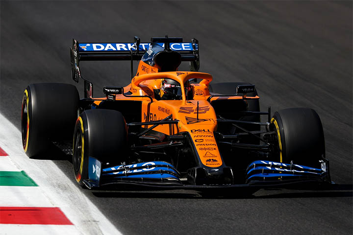
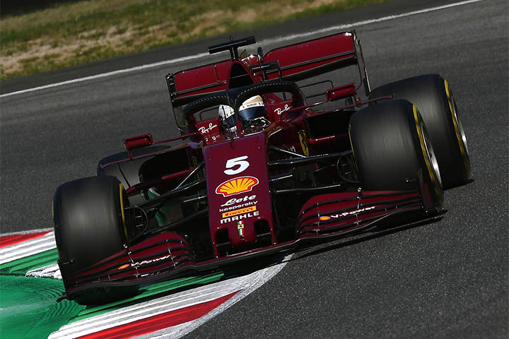
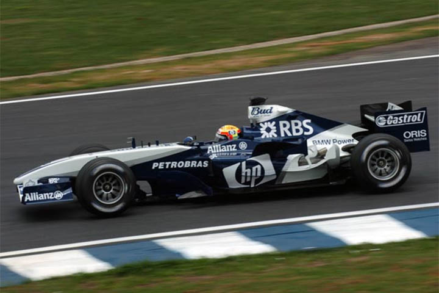

McLaren
Команда McLaren была основана в 1963 году новозеландским гонщиком Формулы-1 Брюсом Маклареном и американцем Тедди Майером.

Ferrari
Команда принимает участие в гонках Формулы-1 с 1950 года по сей день и является самой старой и успешной командой в чемпионате.

Williams
Команда Williams была основана Фрэнком Уильямсом и Патриком Хэдом в 1977 году, после предыдущего проекта Уильямса, окончившегося неудачно.

Red Bull
Команда, создана на базе команды Jaguar Racing и выступает в чемпионате с 2005 года.